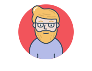
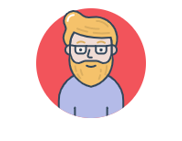

Hei, mitt navn er Robert Nilsen. Jeg er en web designer og gjorde meg ferdig med mastergraden min i Web Design tidligere dette året, og er nå klar for for neste etappe.
 

For å fortsette, jeg har stor lidenskap for området mitt, som er grunnen til at jeg studerte det. Jeg er faktisk selvlært web utvikler, men siden arbeidsplasser krever et sertifikat av noen høyere stående som universiteter, så måtte jeg gå gjennom systemet. Men nå babler jeg bare, jeg elsker faktisk å redigere Instagramprofilen min, og jeg poster aktivt reisene mine fra fritiden. Noen ville kanskje beskrevet meg som en hippie, men jeg ser meg selv som en fritenker. Men nok om det, la oss snakke om kodeferdighetene mine. Jeg har selv lært meg å kode i HTML5, CSS, Python og C++, i tillegg til ekstra HTML5 og CSS fra universitetet. Jeg brukte mye C++ til mikrokontrollere og småprosjekter jeg selv har gjort tidligere, og Python var noe jeg bare ville lære. HTML og CSS er vel egentlig det jeg har brukt mest tid på. Nettdesign er grunnstammen til at jeg kom meg hit jeg er nå.
Michael Vsauce Stevens How Much Does a Shadow Weigh?“You weigh more when the lights are on, than when the lights are off"